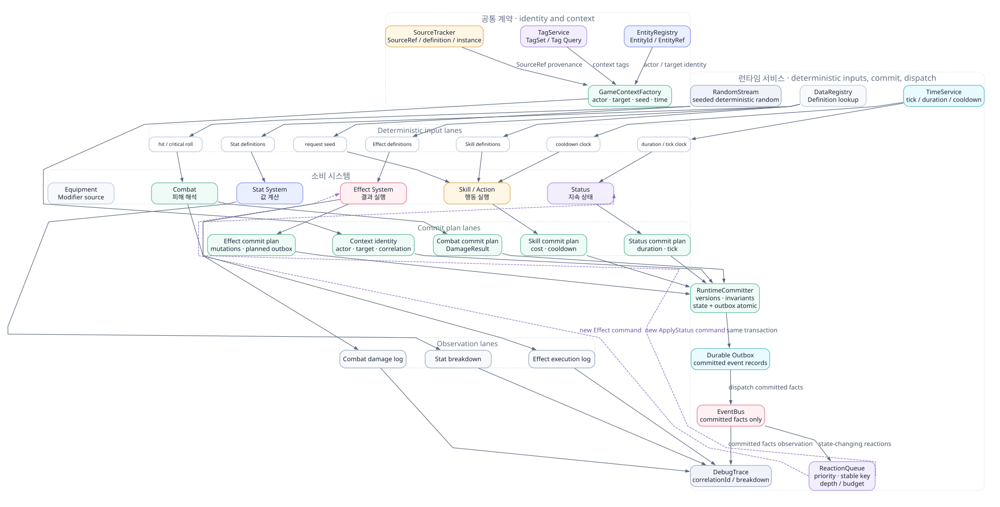

Core Runtime / System Contract
Core Runtime은 Stat, Effect, Skill, Combat, Status가 같은 언어로 대화하게 만드는 기반 계층이다. EntityId, Tag, SourceId, EventBus, Context, Time, RandomSeed를 한 곳에서 정의해 각 시스템의 책임을 깨끗하게 분리한다.
왜 Core Runtime이 필요한가?
Stat과 Effect만 있을 때는 각 문서 안에서 공통 개념을 설명해도 큰 문제가 없다. 하지만 Skill, Combat, Status가 붙는 순간 동일한 Entity 참조, 태그 조건, 이벤트 발행, 시간 처리, 원천 추적 규칙이 여러 곳에 반복된다. Core Runtime은 이 반복을 줄이고, 시스템이 서로 직접 엮이지 않도록 공통 계약을 제공한다.
책임 경계
| 담당한다 | 담당하지 않는다 |
|---|---|
| EntityId, EntityRef, SourceId 같은 공통 식별자 규칙 | 피해량 공식이나 명중/치명타 판정 |
| TagSet, GameContext, EventBus 같은 시스템 간 계약 | 스킬 사용 가능 여부와 쿨다운 정책 |
| TimeService, Tick, Duration 기준 제공 | 상태 중첩이나 상태별 해제 규칙 |
| RandomStream과 seed 분기 규칙 | 장비 옵션 생성 확률표 자체 |
| Definition / Runtime 분리 기준과 DataRegistry 조회 | UI 버튼, 아이콘, 전투 텍스트 렌더링 |
| DebugTrace, Replay, 원천 추적을 위한 공통 로그 형식 | AI가 어떤 행동을 선택할지 판단 |
핵심 컴포넌트

EntityId / EntityRef
플레이어, 몬스터, 투사체, 소환수, 함정처럼 월드에 존재하는 대상을 안정적으로 참조한다. 런타임 객체 포인터를 직접 저장하지 않고, 필요할 때 EntityRegistry로 해석한다.
SourceId / SourceRef
Modifier, Effect, Status, Equipment, Reward가 어디서 왔는지 추적한다. 장비 해제나 상태 제거 시 sourceId 기준으로 관련 Modifier를 안전하게 제거할 수 있다.
TagSet
fire, spell, boss, debuff, dot처럼 규칙 분기에 쓰는 공통 분류다. 타입 상속보다 데이터 기반 조건식을 만들기 쉽다.
GameContext
actor, target, position, source, tags, random, time, custom payload를 묶는 실행 문맥이다. StatContext, EffectContext, SkillContext는 모두 GameContext의 특화 형태로 볼 수 있다.
EventBus
OnSkillUsed, OnDamageDealt, OnStatusApplied 같은 이벤트를 발행한다. 시스템 간 직접 호출을 줄이고 장비 발동 효과, 업적, 로그, UI 알림을 느슨하게 연결한다.
RandomStream
명중, 치명타, 장비 발동 확률처럼 랜덤이 필요한 판정을 시드 기반 스트림으로 처리한다. 테스트, 리플레이, 서버 검증, 밸런스 시뮬레이션에 중요하다.
Definition과 Runtime 분리
Core Runtime이 강제해야 하는 가장 중요한 규칙은 정의 데이터와 런타임 상태의 분리다. 원본 정의를 실행 중에 수정하면 저장, 동기화, 리플레이, 밸런스 검증이 모두 어려워진다.
| 구분 | 예시 | 원칙 |
|---|---|---|
| Definition Data | StatDefinition, EffectDefinition, SkillDefinition, StatusDefinition | 정적 데이터다. 런타임 중 원본을 직접 바꾸지 않는다. |
| Runtime State | StatInstance, SkillRuntime, StatusInstance, ItemInstance | 특정 Entity나 세션에 종속되는 현재 상태다. 저장/로드 대상이며 instanceId와 원천 sourceId를 분리해 추적한다. |
| Runtime Override | SkillMutation, temporary modifier, buff override | 원본 Definition을 수정하지 않고 적용 시점에 겹쳐 읽는다. |
| Execution Context | EffectContext, CombatContext, SkillRequest | 한 번의 실행에 필요한 임시 정보다. 결과 로그를 제외하면 장기 저장하지 않는다. |
{
"entityId": "player_001",
"source": {
"sourceId": "status_burn_8231",
"sourceType": "status",
"definitionId": "status_burn"
},
"context": {
"time": 42.75,
"tags": ["fire", "dot", "skill"],
"randomStream": "combat:player_001:cast_904"
}
}시스템 계약 API
Core Runtime은 거대한 매니저 하나가 아니라, 작은 서비스와 값 객체의 집합으로 설계하는 편이 좋다. 각 시스템은 필요한 계약만 주입받는다.
| 계약 | 대표 API | 사용 예 |
|---|---|---|
| EntityRegistry | resolve(entityId), exists(entityId), queryByTag(tag) | Effect의 TargetSelector가 대상 후보를 찾는다. |
| DataRegistry | getDefinition(type, id), validateSchema(id) | SkillExecutor가 SkillDefinition과 EffectBundle을 조회한다. |
| EventBus | publish(event), subscribe(eventType, handler) | 장비의 TriggeredEffect가 OnAttackHit에 반응한다. |
| TimeService | now(), deltaTime(), scheduleTick() | StatusSystem이 지속시간과 tick을 관리한다. |
| RandomService | stream(seed), rollChance(p), range(min,max) | CombatResolver가 명중과 치명타를 결정론적으로 판정한다. |
| DebugTrace | beginScope(), addStep(), attachBreakdown() | Stat 계산식, Skill 실행, Effect 결과를 한 로그로 묶는다. |
SourceId와 추적성
SourceId는 단순한 디버그용 문자열이 아니다. Modifier 제거, 중첩 판정, 이벤트 원인 분석, 저장/로드 복원에 직접 관여한다.
장비 Source
검을 장착하면 itemInstanceId를 sourceId로 하는 공격력 Modifier가 등록된다. 해제할 때 같은 sourceId로 모두 제거한다.
상태 Source
Burn을 누가 걸었는지는 skill cast sourceId로 남기고, Burn의 tick 예약이나 Rage/Freeze가 제공하는 Modifier는 statusInstanceId를 sourceId로 가진다.
스킬 Source
Fireball의 DamageEffect와 ApplyStatusEffect(effect_apply_burn)는 skill:fireball:castId를 원천으로 남겨 CombatLog와 EffectLog를 연결한다.
결정론과 테스트
전투 시스템은 디버그하기 어렵기 때문에 “같은 입력이면 같은 결과”를 최대한 보장해야 한다. RandomStream은 전역 랜덤을 바로 호출하지 않고, castId, attackerId, targetId, eventIndex 같은 값을 조합해 분기별 랜덤 스트림을 만든다.
| 테스트 대상 | 검증 포인트 |
|---|---|
| 동일 seed 반복 실행 | 명중, 치명타, 확률 발동 결과가 동일해야 한다. |
| 이벤트 순서 | OnSkillUsed → OnEffectExecuted → OnDamageResolved 순서가 보장되어야 한다. |
| Source 제거 | 상태나 장비 제거 시 해당 sourceId의 Modifier만 제거되어야 한다. |
| 리플레이 | SkillRequest와 seed만으로 주요 전투 결과를 재현할 수 있어야 한다. |
안티패턴
전역 Singleton 남용
모든 시스템이 GameManager.Instance를 통해 서로 접근하면 테스트와 리플레이가 어려워진다. 필요한 계약만 인터페이스로 주입한다.
원본 Definition 수정
레벨업 보상으로 FireballDefinition 자체를 수정하면 다른 Entity와 저장 데이터까지 오염된다. SkillMutation 또는 RuntimeOverride로 분리한다.
문자열 Source 난립
sourceId가 임의 문자열이면 제거와 추적이 불안정하다. sourceType, definitionId, instanceId를 가진 구조화된 SourceRef를 사용한다.
이벤트에 게임 규칙 숨기기
핵심 규칙을 이벤트 리스너에만 숨기면 실행 순서가 불명확해진다. EventBus는 후속 반응과 관찰용으로 쓰고 핵심 판정은 명시적 파이프라인에 둔다.
완료 체크리스트
- EntityId, SourceId, TagSet, GameContext의 직렬화 형식이 정해져 있다.
- Definition Data와 Runtime State가 분리되어 있고 원본 정의를 직접 수정하지 않는다.
- EventBus 이벤트 이름과 payload 최소 규격이 문서화되어 있다.
- RandomStream이 seed 기반으로 재현 가능하게 동작한다.
- DebugTrace가 Skill, Effect, Stat, Combat 로그를 하나의 원인 체인으로 묶을 수 있다.
- 장비, 상태, 보상 제거 시 sourceId 기준으로 관련 런타임 변경을 되돌릴 수 있다.